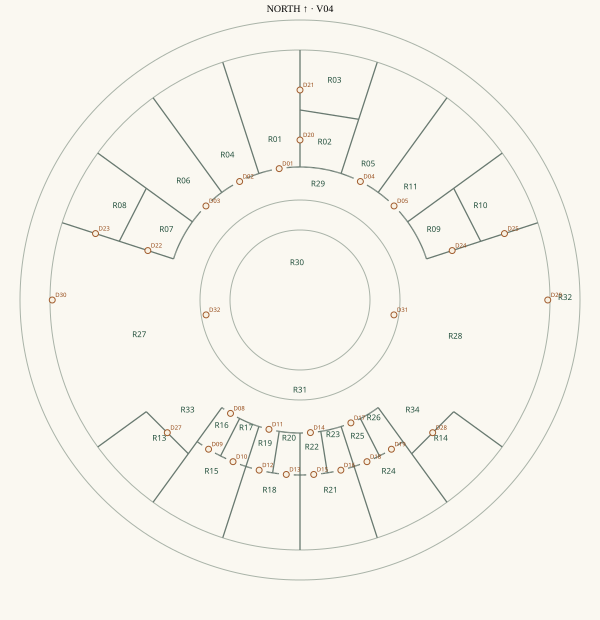

← Walkthrough
Dream Home — room and door reference · v07
R12 is retired and merged into R11 Game room. D26 is retired; other active IDs remain stable. Dimensions are approximate wall-centerline corner measurements. Curved-wall lengths below and on floor-edge labels are straight corner-to-corner chords. Areas deduct modeled partitions but include low headroom and do not deduct furniture or the shell.
All windows are 48×48-inch horizontal-sliding studies with 36-inch sills. There are five garden windows, plus the two four-panel sliding doors. The inner shell is rebuilt cleanly around those openings.
R01 · J + F master bedroom
Type: Bedroom
Radial side: 23.4 ft · Inner chord: 8.3 ft · Outer chord: 15.6 ft
Queen bed (60 × 80-inch mattress) with its head close to the outer shell. The bedside table moves with the bed. Both separate suite doors and the central approach remain open.
Approximate plan area: 269 sq ft.
Access: D01 → R29; D20 → R02; D21 → R03
R02 · Master closet
Type: Closet
Radial side: 11.4 ft · Inner chord: 8.3 ft · Outer chord: 11.9 ft
Wire wardrobe along the radial wall opposite the bedroom doorway, with shelves, hanging rails, garments and bins. The center aisle and D20 approach stay open. Eight-foot ceiling and recessed lighting, with shared loft above.
Approximate plan area: 101 sq ft.
Access: D20 → R01
R03 · Master bathroom
Type: Bathroom
Radial side: 12.0 ft · Inner chord: 11.9 ft · Outer chord: 15.6 ft
Bathtub close to the outer shell. A large tiled shower follows the side wall opposite the bedroom entrance. Vanity and mirror sit against the inner dividing wall. The toilet backs onto the bedroom-side wall beyond the door approach. Fixtures leave an open center.
Approximate plan area: 161 sq ft.
Access: D21 → R01
R04 · Fang’s office
Type: Office
Radial side: 23.4 ft · Inner chord: 8.3 ft · Outer chord: 15.6 ft
Desk and monitor close to the outer shell, with chair on the garden side facing the desk. Bookshelves follow the radial side wall and leave the window and doorway clear.
Approximate plan area: 267 sq ft.
Access: D02 → R29
R05 · Jason’s office
Type: Office
Radial side: 23.4 ft · Inner chord: 8.3 ft · Outer chord: 15.6 ft
Desk and monitor close to the outer shell, with chair facing the desk. Bookshelves follow one radial wall. Recliner, extended footrest and a supported side table sit along the other radial wall, clear of the entrance.
Approximate plan area: 267 sq ft.
Access: D04 → R29
R06 · Storage / future stairs
Type: Storage and reserved space
Radial side: 23.4 ft · Inner chord: 8.3 ft · Outer chord: 15.6 ft
Two heavy-duty shelving units, each 48 × 20 × 72 inches with five tiers, stand parallel to the two radial walls in the outer half. The center aisle and inner future-stair reservation remain open. This is one continuous room; the two floor names do not indicate a dividing wall.
Approximate plan area: 267 sq ft.
Access: D03 → R29
R07 · Freezer pantry
Type: Pantry
Radial side: 11.4 ft · Inner chord: 8.3 ft · Outer chord: 11.9 ft
Chest freezer parallel to the outer dividing wall, clear of its lid space. A five-tier shelving unit follows the opposite radial wall. The entrance from the kitchen and the center aisle remain open.
Approximate plan area: 101 sq ft.
Access: D22 → R27
R08 · Kitchen pantry
Type: Pantry
Radial side: 12.0 ft · Inner chord: 11.9 ft · Outer chord: 15.6 ft
Two 48 × 20 × 72-inch five-tier shelving units line the radial wall opposite the kitchen doorway. The doorway wall, center aisle and exterior window remain clear.
Approximate plan area: 161 sq ft.
Access: D23 → R27
R09 · Main utility closet
Type: Utility
Radial side: 11.4 ft · Inner chord: 8.3 ft · Outer chord: 11.9 ft
Hydronic module and air-handler/dehumidification allowances line the radial wall opposite the entrance. Consolidated hydronic manifolds sit against the outer dividing wall. The center service aisle and inner future-panel reservation remain open. Equipment and service clearances remain subject to product selection.
Approximate plan area: 101 sq ft.
Access: D24 → R28
R10 · Laundry
Type: Laundry
Radial side: 12.0 ft · Inner chord: 11.9 ft · Outer chord: 15.6 ft
Washer and dryer near the outer shell, with laundry sink beside them. The supported 36-inch folding counter between dryer and sink is trimmed to meet the sink end with a small joint. A five-tier shelving unit follows the opposite radial wall, clear of the doorway. The dryer side-exhaust route remains provisional.
Approximate plan area: 161 sq ft.
Access: D25 → R28
R11 · Game room
Type: Game room
Radial side: 23.4 ft · Inner chord: 8.3 ft · Outer chord: 15.6 ft
TV and console against one radial wall. Couch and extended recliner follow the opposite radial wall, facing the screen. The former study/flex dividing wall is gone; R12 and D26 remain retired. The center and hallway approach remain open.
Approximate plan area: 267 sq ft.
Access: D05 → R29
R13 · West shared bathroom
Type: Bathroom
Radial side: 12.0 ft · Inner chord: 11.9 ft · Outer chord: 15.6 ft
Shower close to the outer curved shell. Toilet backs onto the kitchen-side radial wall; vanity and mirror follow the opposite side. The centered radial entrance D27 and its approach remain clear. Kitchen counters and stove sit on the other side of the bathroom wall.
Approximate plan area: 161 sq ft.
Access: D27 → R33
R14 · East shared bathroom
Type: Bathroom
Radial side: 12.0 ft · Inner chord: 11.9 ft · Outer chord: 15.6 ft
Shower close to the outer curved shell. Toilet and vanity follow opposite radial walls. The centered radial entrance D28 and its approach remain clear.
Approximate plan area: 161 sq ft.
Access: D28 → R34
R15 · Bedroom 1
Type: Bedroom
Radial side: 15.0 ft · Inner chord: 11.0 ft · Outer chord: 15.6 ft
Standard twin mattress (38 × 75 inches), with the bed along one radial wall and its head close to the outer shell. The bedside table stays with the bed. Desk and chair sit against the opposite wall. Both bedroom and closet openings remain clear. Eight-foot ceiling, recessed lighting and shared loft above.
Approximate plan area: 191 sq ft.
Access: D09 → R16; D10 → R17
R16 · Bedroom 1 entry
Type: Private entry
Radial side: 8.4 ft · Inner chord: 4.2 ft · Outer chord: 5.5 ft
Unfurnished passage connecting the shared hallway and bedroom; the door approaches stay clear. Eight-foot ceiling and recessed lighting, with shared loft above.
Approximate plan area: 35 sq ft.
Access: D08 → R29; D09 → R15
R17 · Bedroom 1 closet
Type: Closet
Radial side: 8.4 ft · Inner chord: 4.2 ft · Outer chord: 5.5 ft
Wire organizer along the outer-angle radial wall, with eight shelves, five rails and clothing/bin studies. The unit is set back from the bedroom-facing doorway to preserve its approach and the center aisle. Eight-foot ceiling and recessed lighting, with shared loft above.
Approximate plan area: 34 sq ft.
Access: D10 → R15
R18 · Bedroom 2
Type: Bedroom
Radial side: 15.0 ft · Inner chord: 11.0 ft · Outer chord: 15.6 ft
Standard twin mattress (38 × 75 inches), with the bed along one radial wall and its head close to the outer shell. The bedside table stays with the bed. Desk and chair sit against the opposite wall. Both bedroom and closet openings remain clear. Eight-foot ceiling, recessed lighting and shared loft above.
Approximate plan area: 191 sq ft.
Access: D12 → R19; D13 → R20
R19 · Bedroom 2 entry
Type: Private entry
Radial side: 8.4 ft · Inner chord: 4.2 ft · Outer chord: 5.5 ft
Unfurnished passage connecting the shared hallway and bedroom; the door approaches stay clear. Eight-foot ceiling and recessed lighting, with shared loft above.
Approximate plan area: 35 sq ft.
Access: D11 → R29; D12 → R18
R20 · Bedroom 2 closet
Type: Closet
Radial side: 8.4 ft · Inner chord: 4.2 ft · Outer chord: 5.5 ft
Wire organizer along the outer-angle radial wall, with eight shelves, five rails and clothing/bin studies. The unit is set back from the bedroom-facing doorway to preserve its approach and the center aisle. Eight-foot ceiling and recessed lighting, with shared loft above.
Approximate plan area: 34 sq ft.
Access: D13 → R18
R21 · Bedroom 3
Type: Bedroom
Radial side: 15.0 ft · Inner chord: 11.0 ft · Outer chord: 15.6 ft
Standard twin mattress (38 × 75 inches), with the bed along one radial wall and its head close to the outer shell. The bedside table stays with the bed. Desk and chair sit against the opposite wall. Both bedroom and closet openings remain clear. Eight-foot ceiling, recessed lighting and shared loft above.
Approximate plan area: 191 sq ft.
Access: D15 → R22; D16 → R23
R22 · Bedroom 3 entry
Type: Private entry
Radial side: 8.4 ft · Inner chord: 4.2 ft · Outer chord: 5.5 ft
Unfurnished passage connecting the shared hallway and bedroom; the door approaches stay clear. Eight-foot ceiling and recessed lighting, with shared loft above.
Approximate plan area: 35 sq ft.
Access: D14 → R29; D15 → R21
R23 · Bedroom 3 closet
Type: Closet
Radial side: 8.4 ft · Inner chord: 4.2 ft · Outer chord: 5.5 ft
Wire organizer along the outer-angle radial wall, with eight shelves, five rails and clothing/bin studies. The unit is set back from the bedroom-facing doorway to preserve its approach and the center aisle. Eight-foot ceiling and recessed lighting, with shared loft above.
Approximate plan area: 34 sq ft.
Access: D16 → R21
R24 · Bedroom 4
Type: Bedroom
Radial side: 15.0 ft · Inner chord: 11.0 ft · Outer chord: 15.6 ft
Standard twin mattress (38 × 75 inches), with the bed along one radial wall and its head close to the outer shell. The bedside table stays with the bed. Desk and chair sit against the opposite wall. Both bedroom and closet openings remain clear. Eight-foot ceiling, recessed lighting and shared loft above.
Approximate plan area: 191 sq ft.
Access: D18 → R25; D19 → R26
R25 · Bedroom 4 entry
Type: Private entry
Radial side: 8.4 ft · Inner chord: 4.2 ft · Outer chord: 5.5 ft
Unfurnished passage connecting the shared hallway and bedroom; the door approaches stay clear. Eight-foot ceiling and recessed lighting, with shared loft above.
Approximate plan area: 35 sq ft.
Access: D17 → R29; D18 → R24
R26 · Bedroom 4 closet
Type: Closet
Radial side: 8.4 ft · Inner chord: 4.2 ft · Outer chord: 5.5 ft
Wire organizer along the outer-angle radial wall, with eight shelves, five rails and clothing/bin studies. The unit is set back from the bedroom-facing doorway to preserve its approach and the center aisle. Eight-foot ceiling and recessed lighting, with shared loft above.
Approximate plan area: 34 sq ft.
Access: D19 → R24
R27 · West entry / kitchen / dining
Type: Open shared room
Radial side: 23.4 ft · Inner chord: 24.2 ft · Outer chord: 45.4 ft
Continuous 36-inch-high counter follows the outer shell and turns along the kitchen side of bathroom R13. The sink and dishwasher remain on the outer run; the stove, oven and aligned hood occupy the R13-side run. Four burner outlines sit directly on the cooktop. Refrigerator stays near the exterior entrance. The island and all three stools are removed. A 3.5 × 8-foot table with six chairs facing it sits in the open former-island area, centered about radius 35.5 feet and angle 201°. Work aisles, pantry doors and the exterior-to-garden route stay open. Outside the garden slider, a separate curved-back canopy with a straight front chord shades the approach. Toggle it with Door canopies & drains.
Approximate plan area: 837 sq ft.
Access: D22 → R07; D23 → R08; D30 → R32; D32 → R31
R28 · East entry / living room
Type: Open shared room
Radial side: 23.4 ft · Inner chord: 24.2 ft · Outer chord: 45.4 ft
A sofa follows the bathroom-side radial wall, with a second sofa facing it and a supported coffee table between them. This conversation group occupies the south side of the living area, leaving the entrance and garden-door route open. The TV remains in R11 Game room. Outside the garden slider, a separate curved-back canopy with a straight front chord shades the approach. Toggle it with Door canopies & drains.
Approximate plan area: 837 sq ft.
Access: D24 → R09; D25 → R10; D29 → R32; D31 → R31
R29 · Garden hallway
Type: Circulation
Continuous garden hallway, six feet clear near the floor. The inner shell has been rebuilt with just five 48-inch-square sliding windows: three evenly spaced on the longer north arc and two on the shorter south arc. Sills are 36inches. Open kitchen/living connections and their outward-projecting four-panel garden sliders remain.
Approximate plan area: 946 sq ft.
Access: D01 → R01; D02 → R04; D03 → R06; D04 → R05; D05 → R11; D08 → R16; D11 → R19; D14 → R22; D17 → R25
R30 · Courtyard garden
Type: Outdoor garden
28-foot-diameter planted circle; no radial walls or wall chords.
Small rectangular pool west of center; two trees northeast and southwest of center; low planting areas.
Approximate plan area: 616 sq ft.
Access: Continuous open connection; no separate doorway.
R31 · Garden walkway
Type: Outdoor circulation
Six-foot-wide garden walkway, radii 14–20 feet. By default, two 22-foot-wide curved-back canopies shelter the garden doors at D31 (living room) and D32 (kitchen). Their straight front edges are parallel to the doors and reach the walkway’s inner edge at the center. Roof tops slope from 10 feet 10 inches at the dome to 10 feet 4 inches at the front. The north and south walkway arcs remain open to the sky. Each canopy and its adjacent unshaded inner-rim gutter drain to a left-corner downspout, viewed from inside the room. The previous five-pole ring awning, canvas, cables, hardware and both circular gutter rims are preserved as an independent option, OFF by default.
Approximate plan area: 641 sq ft.
Access: D31 → R28; D32 → R27
R32 · Outside walkway
Type: Outdoor circulation
Six-foot concrete outer walkway around the house. Exterior entrance screen doors and tapered projecting windows remain. The five outer circular gutter segments and five outer downspouts belong to the old ring-awning assembly and are OFF by default. The new door-canopy drainage option serves the courtyard rim only; it does not replace outer-rim drainage.
Approximate plan area: 1998 sq ft.
Access: D29 → R28; D30 → R27
R33 · West reading nook
Type: Open reading area
Radial side: 11.4 ft · Inner chord: 8.3 ft · Outer chord: 11.9 ft
Two bookcases follow the radial wall, with an open center and clear approach to bathroom D27.
Approximate plan area: 106 sq ft.
Access: D27 → R13
R34 · East reading nook
Type: Open reading area
Radial side: 11.4 ft · Inner chord: 8.3 ft · Outer chord: 11.9 ft
Two bookcases follow the radial wall, with an open center and clear approach to bathroom D28.
Approximate plan area: 106 sq ft.
Access: D28 → R14
R35 · Orchard grounds
Type: Outdoor grounds
Orange, lemon, kumquat, apple, pear, peach, cherry and persimmon trees; two of each around the outside of the house. Cultivars and irrigation remain undecided.
Approximate plan area: 33708 sq ft.
Access: Continuous open connection; no separate doorway.
Door register
D06/D07 are retired at the open reading nooks. D26 is removed with the game-room dividing wall.
| ID |
Connects |
Type |
Width |
| D01 |
R29 ↔ R01 |
Framed opening |
36-inch model gap before frames; final leaf size unresolved |
| D02 |
R29 ↔ R04 |
Framed opening |
36-inch model gap before frames; final leaf size unresolved |
| D03 |
R29 ↔ R06 |
Framed opening |
36-inch model gap before frames; final leaf size unresolved |
| D04 |
R29 ↔ R05 |
Framed opening |
36-inch model gap before frames; final leaf size unresolved |
| D05 |
R29 ↔ R11 |
Framed opening |
36-inch model gap before frames; final leaf size unresolved |
| D06 |
R29 ↔ R13 |
Former doorway replaced by open nook connection |
No door |
| D07 |
R29 ↔ R14 |
Former doorway replaced by open nook connection |
No door |
| D08 |
R29 ↔ R16 |
Framed opening |
36-inch model gap before frames; final leaf size unresolved |
| D09 |
R16 ↔ R15 |
Framed opening |
36-inch model gap before frames; final leaf size unresolved |
| D10 |
R17 ↔ R15 |
Framed opening |
36-inch model gap before frames; final leaf size unresolved |
| D11 |
R29 ↔ R19 |
Framed opening |
36-inch model gap before frames; final leaf size unresolved |
| D12 |
R19 ↔ R18 |
Framed opening |
36-inch model gap before frames; final leaf size unresolved |
| D13 |
R20 ↔ R18 |
Framed opening |
36-inch model gap before frames; final leaf size unresolved |
| D14 |
R29 ↔ R22 |
Framed opening |
36-inch model gap before frames; final leaf size unresolved |
| D15 |
R22 ↔ R21 |
Framed opening |
36-inch model gap before frames; final leaf size unresolved |
| D16 |
R23 ↔ R21 |
Framed opening |
36-inch model gap before frames; final leaf size unresolved |
| D17 |
R29 ↔ R25 |
Framed opening |
36-inch model gap before frames; final leaf size unresolved |
| D18 |
R25 ↔ R24 |
Framed opening |
36-inch model gap before frames; final leaf size unresolved |
| D19 |
R26 ↔ R24 |
Framed opening |
36-inch model gap before frames; final leaf size unresolved |
| D20 |
R01 ↔ R02 |
Open oak door leaf |
36-inch model gap before frames; final leaf size unresolved |
| D21 |
R01 ↔ R03 |
Open oak door leaf |
36-inch model gap before frames; final leaf size unresolved |
| D22 |
R27 ↔ R07 |
Open oak door leaf |
36-inch model gap before frames; final leaf size unresolved |
| D23 |
R27 ↔ R08 |
Open oak door leaf |
36-inch model gap before frames; final leaf size unresolved |
| D24 |
R28 ↔ R09 |
Open oak door leaf |
36-inch model gap before frames; final leaf size unresolved |
| D25 |
R28 ↔ R10 |
Open oak door leaf |
36-inch model gap before frames; final leaf size unresolved |
| D26 |
R11 ↔ R12 |
Retired — R11 and R12 combined into game room R11 |
No dividing wall or door |
| D27 |
R13 ↔ R33 |
Single outer bathroom entrance |
36-inch model gap before frames; final leaf size unresolved |
| D28 |
R14 ↔ R34 |
Single outer bathroom entrance |
36-inch model gap before frames; final leaf size unresolved |
| D29 |
R28 ↔ R32 |
36-inch exterior door with metal screen door, shown open |
36-inch leaf; frame/rough-opening study |
| D30 |
R27 ↔ R32 |
36-inch exterior door with metal screen door, shown open |
36-inch leaf; frame/rough-opening study |
| D31 |
R28 ↔ R31 |
Four-panel double sliding garden door, center pair shown open |
12 ft overall; about 5.8 ft central passage (provisional) |
| D32 |
R27 ↔ R31 |
Four-panel double sliding garden door, center pair shown open |
12 ft overall; about 5.8 ft central passage (provisional) |
Display and lighting
Independent toggles: room names, IDs, areas, wall-edge lengths, square grid, radial grid, height grid. In Blender, sunlight, recessed fixtures and LED strips are the only illumination sources. The walkthrough uses the restored global environment, hemisphere and gentle interior fill lighting for visibility. Blender uses actual recessed lights and emissive strips with light bounces. Three conduits follow the inner and outer 10-foot rings and the nominal 15-foot apex, set just inside the finished shell; diffused LEDs run beside them. Hanger capacities and detailed conduit supports remain unselected.
Shade options and exterior finishes
Door canopies & drains is ON by default; Ring awning & gutters is OFF. Both controls also switch collisions. The current exterior texture studies show 55,845 Penrose motifs or 26,667 stone motifs on the shell mapping. These are alternative visual finishes, not fabrication or purchase quantities. See Shade systems and finish counts for asset groups, dimensions, drainage and the counting method.